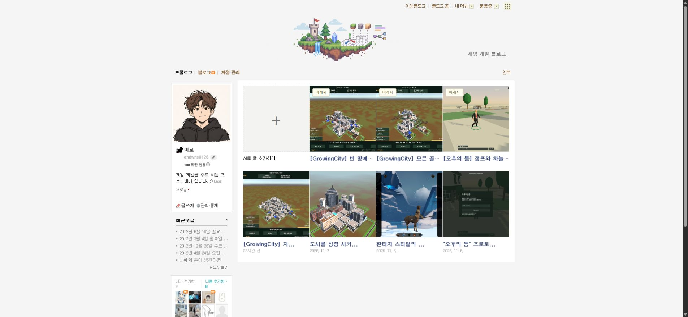

Tracefolio REPORTS & ISSUES
Tracefolio REPORTS & ISSUES미미로 블로그 매니저수정사항
미게시3개 자동 유지 최종 설치본·직접 발행 관찰 연결
검증 대기네이버에서 직접 발행 완료한 경우의 검증 연결까지 포함해 최종49파일·34검사·GitChunk복원을 확인했습니다. 실제 네이버 입력은 확장갱신 응답대기입니다.
작업 결과
자동 원고 유지가 켜져 있고 실제원고3개가보존되어있습니다. 직접네이버발행관찰을추가한최종설치본을적용하고49파일해시·34회귀검사·공식GitChunk복원을확인했습니다. 실제네이버입력은갱신응답대기입니다.

앞선실AI2→3보충·초기설치검증 · 실제빈편집기버그기록
변경 내용
적용 내용
- 게시결과URL·공개본문검증후에만원고를게시됨으로바꾸고부족한개수를보충합니다. 앱실행중60초주기에도확인합니다.
- 진행중작업을보충예정수에포함하고같은출처·최근실패출처를제외합니다. 실제원고3개가있으면추가AI호출을하지않습니다.
- 작성폼에자동유지토글·미게시/대기개수·오류표시를추가했습니다.
- 키없이직접블로그주소를후보로추가하는UI를넣었습니다. 실제서로이웃신청은네이버에서사용자가진행하며자동전송하지않습니다. 게임후보자동검색은현재API키미보유로대기입니다.
- 생성기카테고리를최신실제블로그카테고리와대조하고기존3편을실제작업카테고리로맞췄습니다.
- 입력검토용네이버편집기에서사용자가직접발행한경우에도해당탭·블로그의게시URL만관찰하고공개본문확인후보충합니다. 관찰은새발행요청을보내지않습니다.
- 앱재시작후보충대기작업이있으면AI를다시준비하고,중단된자동작성기록을성공으로세지않도록처리했습니다. 이재시작부족상태의실제실행검사는이번에별도수행하지않았습니다.
검증
- 최종49파일설치해시·원고3개·자동유지enabled=true확인. 최종설치.
- 최종34/34검사통과. 직전최종검사의임시이미지묶음폴더rename에서EPERM1회가발생했습니다. 원인을추측하지않고실패로그를보존했으며소스변경없이전체재실행34/34통과했습니다.
- 공식GitChunk필터복원과최종159825558바이트·SHA256 8329A7C6A1329D3FCE877531A0C07691348FC72C14D133EFFE571D0D7365F5F0일치. 최종복원. 소스·최종설치본3a92094푸시. 앞선보고서의48파일/5B09해시는그시점설치본기록이며이번49파일산출물과구분합니다.
- 앞선별도프로필의실AI2→3·사진1장보관·job1개중복방지결과는유효하며새공개발행으로반복하지않았습니다.
- 4319테스트서버종료확인·임시검증탭정리·중간설치본/빌드stage회수. 최종releases설치본과기존사용자원고/탭보존. 정리.
남은 사항
실제네이버제목·본문·사진전송과직접후보폼실화면은확장새로고침응답대기입니다. 공개발행·실제서로이웃신청은전송하지않았습니다. 앱종료·AI로그인실패·자료부족시즉시3개완성을보장하지않고상태에오류를남깁니다.
교훈: 사용자가요청한3개유지·검증성공후보충조건을프로젝트AGENTS기존요청조건과통합했습니다. 전역은사실검증·사용자동작구분규칙과중복되어변경없음. 별도프로필검사서버는정상종료했고새검증탭은닫았으며사용자기존탭은보존했습니다.
직접네이버발행후검증관찰·앱재시작부족상태는코드/단위범위와실제운영검증을구분합니다. 공개발행없이실제제목·본문·사진전송을확인하는다음단계는사용자확장새로고침응답이필요합니다.
작업 시간
- 제안 시간: 15~25분
- 실제로 완료된 시간: 시작2026-11-08 19:06:01 KST. 19:26:52 KST최종49파일·원고보존확인,19:27회귀재검사34/34·GitChunk복원·소스푸시완료,19:27:55임시산출물정리완료. 실제네이버입력검증대기. 공개보고배포검증진행.
- XERJ: 미사용 — XERJ연결도구미제공. rg·실제DOM/HTTP/실AI/파일·공식Chrome문서·회귀검사사용.